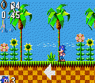

A Comprehensive and Understandable Explanation
of the 2nd Person View in 3D games and Its Advantages Compared to
the Mario64 view.
I. Mario64 view explanation
A. Originally based on Donkey Kong
Country's 2D style <== This is the root 2D style
B. Explanation of directional control
1.Always as if controller were rooted on
3D ground
2.Always relative to camera
C. Shortcoming of camera movement
1.Camera moves like a kite--irregularly
for dramatic shots
2.When combined with relative control,
kiting camera makes control unreliable
II. 2nd person view contrasted.
A. Originally based on console RPGs
especially Final Fantasy series, as well as other isometric
3D games later such as Mario RPG and possible FFTactics(don't
know, never played it)
B. Directional control identical to Mario64
view.
C. Mario64 shortcomings remedied
1. Camera always moves whenever the
character moves, in the exact change in position
2. Fixed camera position and angle
a.Alterable by 90º increments to
left/right.
b. Alterable angle and distance by
menu or perhaps shortcut keys
3. Shortcomings
a.Less dramatic, especially when
falling/jumping. This could be remedied(especially in
an RPG where it's taken for granted) by moving the
camera copiously during non-input periods(i.e.
movies)
Metal Gear Solid?
Mario 64 view
When Mario 64 was released, it had a view and control
style unlike any other currently selling 3D game. It was
natural and easy to use, and capitalized on the novelty of
the analog joystick used by the Nintendo 64™. However,
while it is one of the best control designs around, the
programmers added some features that allow it to create more
dramatic shots, but that made it harder(actually more
aggravating) to use.
The actual control of Mario 64 is straightforward and so
easy to use it's almost unconscious for most people. When the
joystick is pressed 'up'(90º)[Figure 1], Mario runs directly
away from the camera. When the joystick is pressed 'left' he
runs 180º to the camera. Note that his movement is always
relative to the camera.
Figure 1. 90º movement and
180º movement, respectively
However, when programming Mario 64, the same concept was
used as in the Donkey Kong Country series released two years
earlier: when the character begins moving, the camera waits
until the character reaches a certain point near the edge of
the view, then begins to follow him. This concept is nothing
new and has been used since Super Mario Brothers 1 and
beyond. However, in DKC, the camera has a wider range before
following the character, but it 'hurries' to catch up with
the him when he starts to move. Once he continues
moving, it assumes a constant rate, much like all older side
scrolling games. However, when he stops moving, it
continues moving for a short while and then coasts to a
stop[Figure 2]. In DKC, this was not a major issue of
playability, and it was sometimes used to great effect.
Witness the powder barrels that shot Dunky and Diddly to the
very right edge of the screen as the camera struggled to keep
up. However, DKC has one other feature also present in many
games that copied it: the camera moved so that more of the
view was visible on the direction that the character was facing.
This was the biggest control issue in DKC, and it multiplies
in spades when applied to 3D in Mario64.

Figure 2. Here Sonic Game Gear demonstrates
the facing method of determining the camera position when
idle. Note that the camera is slightly more centered when
moving.
In Mario64, the programmers decided that the camera should
optimally be positioned behind and above Mario's back, so
that it pointed the way he was facing. This imitated many
current 3D games that were had just converted 1st person to
3rd person(primary example: Tomb Raider® or Jedi™
Knight®). However, the camera also has simple control
options present using the 'C' buttons on the N64 controller.
When an experienced player was preparing for a difficult
jump, he would adjust the camera so the view closely
resembled a traditional 2D view[Figure 3]. However, if the
player waited before making his jump, the camera would begin
to return to the 'optimal' position behind Mario[Figure 4].
Thus, in most cases the required jump with the adjusted
camera would be 180º or 0º(straight left or right). By the
time the player jumped, the camera might be as much as a
quarter of the way back to the optimal position. Now when the
player pushes directly left, as required by his adjustment,
his jump will be off by around 30º[Figure 5]! Needless to
say, this resulted in many errors caused solely by the
drifting camera.

Figure 3. The player has adjusted the
camera to resemble standard 2D view.
Figure 4. The camera is
returning to the 'optimal' position after a period of
inactivity by the player.

Figure 5. The player pushes
left to the camera, and jumps to his doom. This is caused by
the camera drifting back.
2nd person view
The idea for the 2nd person view originated in console
RPGs, especially the Final Fantasy series by Square™
and later isometric 3D games such as Mario RPG (also by
Square®). In them, whenever the character moves, the camera
follows exactly his position. In other words, the camera's
position is directly linked to the character's position. The
same idea is carried over into the 3D world.
Of note is that in the 2nd person view, control is handled
exactly the same way as in the Mario64. That is,
when the player presses 'up' the character moves
directly(0º) away from the camera. However, the difference
comes in the way the camera reacts to player movement.
In the 2nd person view, the camera never moves
relative to the character unless the player explicitly tells
it to. Thus, when the character moves left or right, the
camera moves exactly that much with him. In
addition, the angle relative to the 'ground' does not change
either. The x/z(parallel to 'ground') angle is alterable by
pressing some sort of shortcut key, preferably by 90º
increments(especially to accomodate those with standard plus
pad type gamepads)[Figure 6]. The y angle should be alterable
as well, perhaps through three or four preset angles and
magnitudes or through a menu option[Figure 7]. Last, for
completeness the original Tomb Raider view should still be
present as an option.
Figure 6. The player has the camera floating
behind him. Then he decides to rotate it 90º to the right. The
camera slides from the original position and stops exactly at the
end position, possibly pausing gameplay.
Figure 7. Three or four preset distance/angles
should be available for ease of use.(sorry, I couldn't resist
rendering it large just once)
The foremost drawback to the 2nd person
view is of course, the reason that the creators of Mario 64
made their view act like it does: it is less dramatic.
However, in an RPG, control is better if it is more precise,
and a dramatic view usually serves to disguise lower detail
levels. The question of course remains how to treat y axis
movement. Probably there will be a upper and lower y limit
after which they are exceeded, the view begins to follow the
character again.
Note: I have assumed that 0º is to the right and positive
degrees are to the counter clock wise--even if this is
inconvenient for you! In addition, 3D dimensions use the DirectX
right hand rule, with z being into the picture.
Diagrams were made by POV-Ray 3.1 for
Windows and screenshots taken with Meka 0.30: "the only emulator for girls"
Page made using FrontPage Express, the free web
page editor with IE 4. It auto-converts .bmp to .gif which is why
all the pictures have ugly spots. According to it this page takes
a little over 1 minute to download at 28.8 bps.
This page best viewed at 1024x768, with
Internet Explorer 4.01 SP2, Pentium II/266 Mhz, 24x CD-ROM,
mostly full 4.3 GB HD. But almost anything will do.